接触色修订 · 待视觉确认 · 正式地图未替换根部与石底，跟随脚边实际地表
已修正原画接触部分偏亮、偏黄绿/橙褐的问题：已有草叶、落叶和土唇逐像素参考当前脚边纯地面颜色与明度。不是按草原/森林名称套一组统一色，也不增加绿色圆斑或假草形状。
树干/树根中心与石体保持原色；林下落叶仍是褐色，只收敛饱和度并匹配局部光照。三种树、六种石头的选型及原碰撞保持，普通石头仍不交互。
草地 · 拖动比较
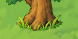
根部 · 原色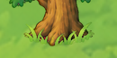
根部 · 适配后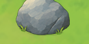
石底 · 原色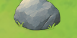
石底 · 适配后变化像素与脚边纯地面平均通道色差：38.8 → 16.0（0–255，非视觉验收指标）。接触区域之外变化像素：0。打开1×原图 · 纯地表取证
林下 · 拖动比较
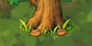
根部 · 原色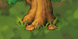
根部 · 适配后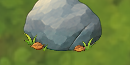
石底 · 原色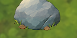
石底 · 适配后变化像素与脚边纯地面平均通道色差：35.8 → 17.3（0–255，非视觉验收指标）。接触区域之外变化像素：0。打开1×原图 · 纯地表取证
裸土 · 拖动比较
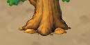
根部 · 原色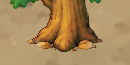
根部 · 适配后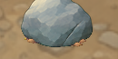
石底 · 原色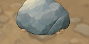
石底 · 适配后变化像素与脚边纯地面平均通道色差：40.2 → 24.1（0–255，非视觉验收指标）。接触区域之外变化像素：0。打开1×原图 · 纯地表取证
晃动与渐隐保持
受击只晃动，无提亮/闪白。固定根部区域14/14帧逐像素一致；最终根部与主体一起透明消失，无残留色块。移除后画面。
验证与范围
4.7.2-stable (official) / NVIDIA GeForce RTX 5060：103项相关检查，失败0；三地表的全部颜色改动均限制在接触区域，区域外变化像素0。27张PNG哈希全部保持。0.65×/1.65×镜头取证保留，不使用加载时的一次性截图颜色缓存。0.65× · 1.65× · 逐像素/哈希数据 · 运行检查 · 日志。
实现只新增一个每帧纯地表拷贝，位置在地表之后、全部冠影/树石/角色/UI之前；同一材质同时用于主体与固定接触片，避免分层处色差。原alpha轮廓不改，渐隐保留。没有本轮新图片生成或外部素材；GPU和密林成本未测，不据此承诺正式世界帧率。
土唇/落叶采用颜色和脚底位置识别，复杂新画稿仍需检查分类；颜色贴合不等于接地造型已通过。当前样板及正式世界状态分开保留，本轮仅修订接触颜色。
运行 Start-Color-Preview.cmd；V切换原色/适配，1/2/3切地表，其余交互同前。